Time Series Analysis
A time series records observations in an order that matters. A week of unusually high demand followed by a week of low demand tells us something different from the same values alternating each day. An unordered sample preserves the values but loses that pattern, even though the pattern may determine tomorrow's demand and the uncertainty around it.
The observations also need a time interpretation. A daily total, a month-end balance, and an hourly temperature reading describe different quantities. Their timestamps identify when they were measured, while publication times determine when they could actually have been used. A useful analysis starts by defining those quantities and dates before choosing a model.
Time-series methods connect three tasks. Description identifies changing levels, repeating patterns, unusual events, and dependence. Modeling proposes a mechanism for those features, such as a trend plus serially correlated errors. Forecasting uses the information available at a particular date to predict later observations. A procedure can be useful for one task and unsuitable for another: a centered smoother can describe history well while using observations unavailable for a real-time forecast.
Worked decomposition: identifying the pieces
Suppose a monthly series is described by
$$ y_t=100+0.5t+10\sin\left(\frac{2\pi t}{12}\right)+\varepsilon_t, \qquad E(\varepsilon_t)=0, \qquad \mathrm{Var}(\varepsilon_t)=4. $$
At $t=6$, the seasonal term is
$$ 10\sin(\pi)=0, $$
so the deterministic part is $100+0.5(6)=103$. At $t=3$, the seasonal term is
$$ 10\sin\left(\frac{\pi}{2}\right)=10, $$
so the deterministic part is $100+0.5(3)+10=111.5$.
Between months 3 and 6, the trend component rises from 101.5 to 103, yet the deterministic total falls from 111.5 to 103 because the seasonal contribution falls by 10. A decline in observed sales would therefore not, by itself, establish a declining trend. Decomposition separates changes in the underlying level from changes due to seasonal position and from the unpredictable remainder.
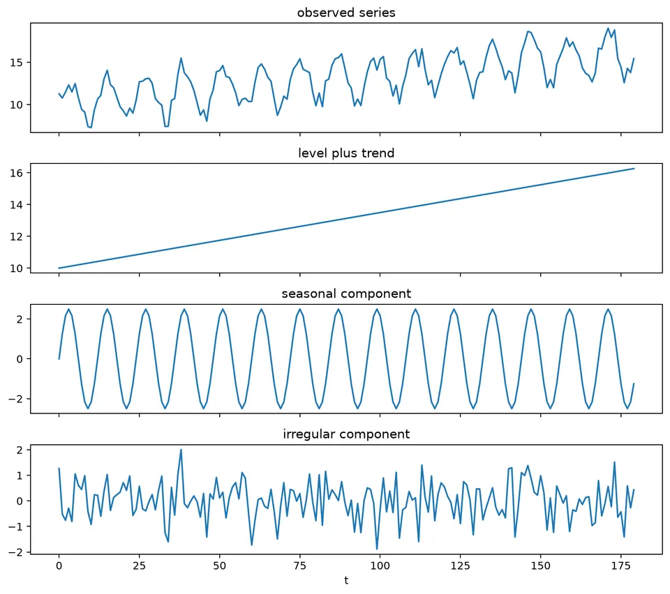
The figure shows these components together. Trend describes slow level movement, seasonality describes regular within-cycle variation, and the remainder captures variation not explained by the chosen decomposition.
Observations and their index
A time series is an ordered collection of observations indexed by time or another meaningful ordered variable. In applied work, the observations are often recorded on a regular grid such as hourly, daily, monthly, or quarterly, but irregularly spaced observations are also time series and require methods that respect their sampling pattern.
Time-series analysis studies how observations evolve, how their dependence changes with lag, which systematic structures are present, and how uncertainty propagates into future forecasts.
Discrete vs. continuous time series
- A discrete-time series is observed at distinct indexed times, such as daily or monthly observations.
- A continuous-time process is defined over a continuous time interval, even if it may only be sampled at discrete times.
- Most methods in these notes focus on discrete-time data.
Ordered Index, Not Just Time
The index only needs a meaningful order and direction. Besides clock time, examples include depth, distance along a transect, or sequential position in a production line. What matters is that the order is scientifically meaningful and that lagged relationships can be interpreted consistently.
First Look: Plotting the Series
A time plot is one of the most informative first diagnostics. It can reveal trend, repeating seasonality, cycles, changing variance, outliers, missing periods, and structural breaks.
Ask what each plotted point represents. A daily total aggregates all activity during the day; an end-of-day reading records a state at one instant. A missing date can mean an unobserved value, a closed business, or genuinely zero activity. Treating those meanings as interchangeable changes the modeled series. Record the sampling interval, aggregation rule, units, and missing-value meaning alongside the time plot.
The following synthetic examples isolate common patterns.
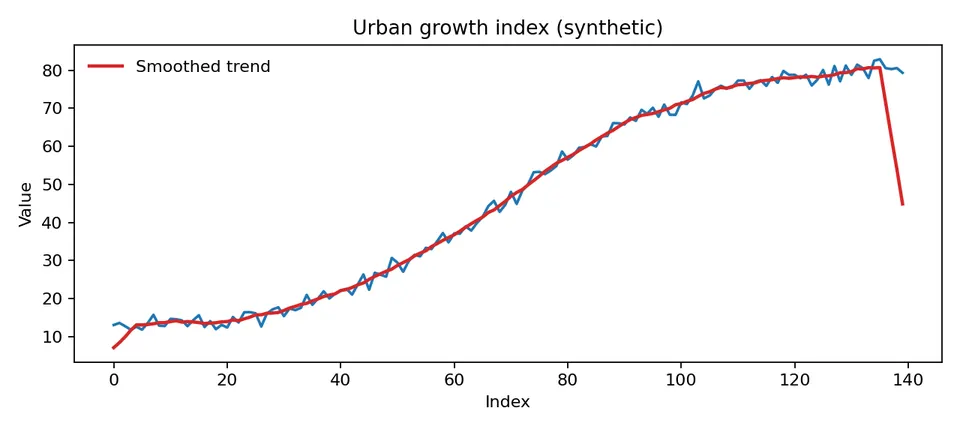
A smooth nonlinear rise suggests that a constant-level stationary model would be inappropriate without a trend component or transformation.
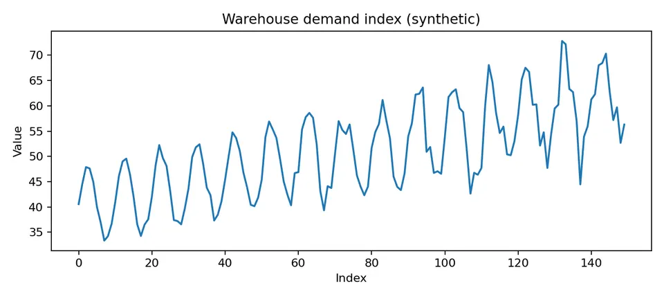
Here the seasonal pattern repeats while its amplitude grows. The increasing spread suggests considering a log or other variance-stabilizing transformation before modeling the seasonal structure.
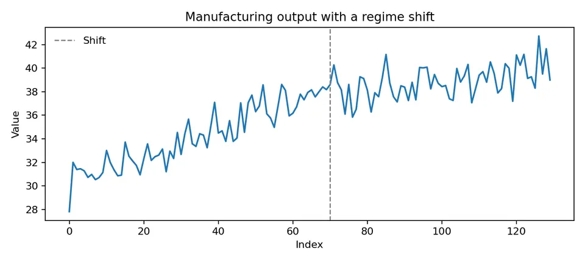
A level shift can make a single global mean fall between two regimes without representing either one well. A model fitted across the break may then leave long runs of same-signed residuals on each side. Investigate whether the shift reflects a measurement change, a known intervention, or a change in the underlying process; the appropriate response can be a revised data definition, a predictor, or a model that allows parameters to change.
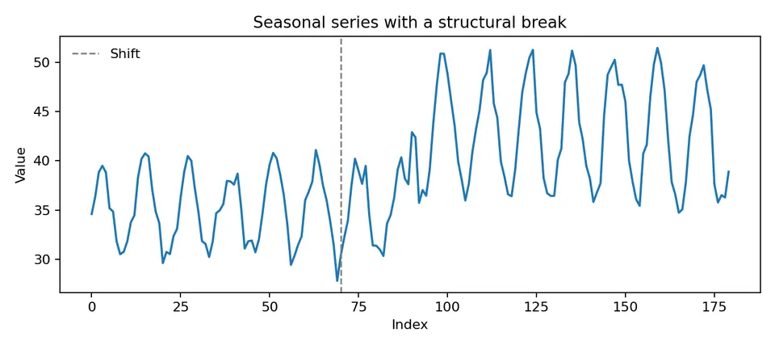
This example shows that both the level and seasonal amplitude can change after a break, so simply estimating one seasonal index for the full sample may be inadequate.
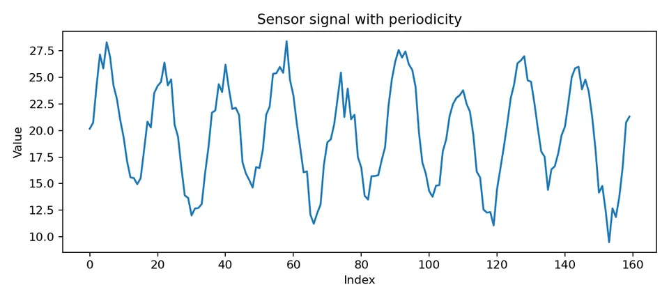
A series can oscillate without having calendar seasonality. Seasonality refers to a fixed repeating period tied to the sampling structure; other periodic or cyclic behavior may have a different mechanism.
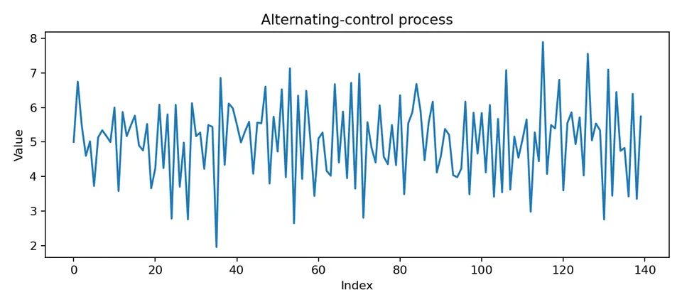
Negative short-lag dependence tends to produce alternation around the mean.
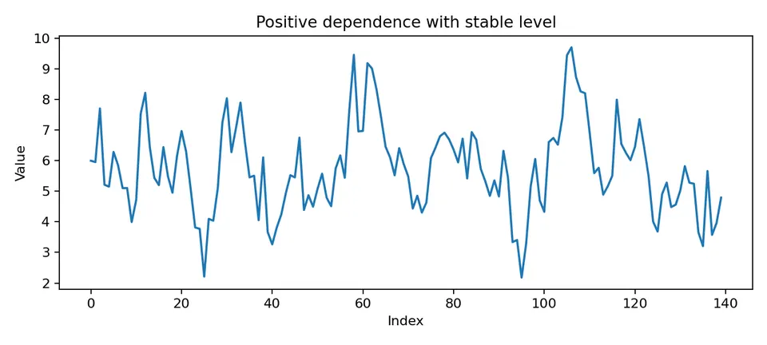
Positive short-lag dependence tends to produce runs of observations on the same side of the mean.
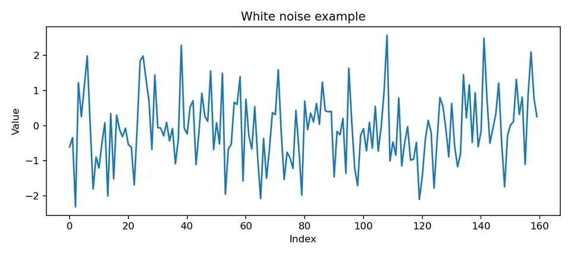
White noise has a stable mean and variance with no linear autocorrelation at nonzero lags. A finite realization can still show apparent short runs by chance.
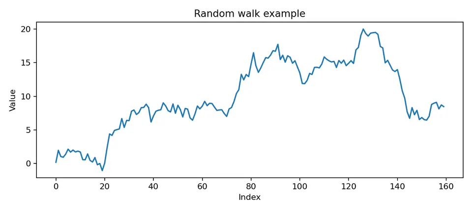
A random walk accumulates shocks, so its level wanders and its variance grows with time. The visual contrast with white noise is a first illustration of stationary versus non-stationary behavior.
Goals of Time Series Analysis
Choose methods by the question. To estimate a historical trend, later observations may legitimately help smooth an earlier level. To issue tomorrow's forecast, those observations do not yet exist. To estimate the effect of an intervention, predictive association alone is insufficient: the analysis needs assumptions about confounding and the intervention mechanism. Description, prediction, and causal explanation can share a dataset while requiring different information and different validation.
Modeling Mindset
We often treat the observed series as one realization of an underlying stochastic process. The observations are generally not assumed to be IID because their distributions, conditional means, variances, or lag relationships can depend on time and past information.
A repeated mean pattern and serial error dependence are different sources of association. If sales are higher every December, the raw series can be highly correlated at annual lags even when deviations from each month's mean are independent. After modeling that seasonal mean, the residuals may still be persistent from one date to the next. The first feature concerns the expected value at each date; the second concerns joint fluctuations around that expectation.
A complete probabilistic specification for observations $X_1,\ldots,X_n$ is their joint distribution,
$$ F(c_1,\ldots,c_n) =P(X_1\le c_1,\ldots,X_n\le c_n). $$
A joint distribution describes every combination of observations and therefore every form of temporal dependence. Specifying it directly becomes difficult as the record grows. Dynamic models reduce that task by expressing the next value conditional on a limited history, or by evolving a small latent state. Moment-based methods instead describe means and lag covariances. Each approach makes the structure manageable by restricting which relationships are represented.
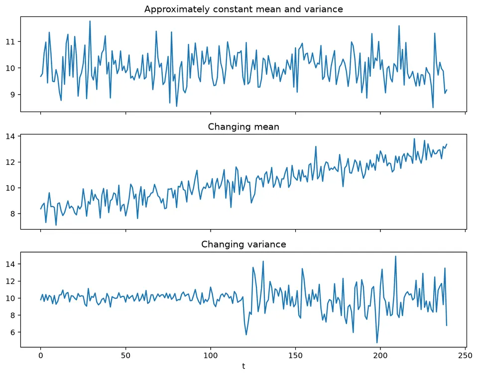
The changing-moments figure illustrates why one global mean and variance can be misleading when the process evolves. Stationarity assumptions should be checked against the time variation visible in the data.
Why temporal structure changes the model
Ordinary regression and time-series modeling are not competing domains. Regression can include time, lagged predictors, calendar effects, and serial-error structures. The distinctive challenge in forecasting is that observations are ordered, future information is unavailable, and uncertainty often depends on forecast horizon.
For electricity demand, temperature can explain heating and cooling needs, the calendar can explain workday patterns, and recent demand can summarize short-run persistence. A forecast for next week must also obtain next week's temperatures or state a weather scenario. A regression with a time-series error model can combine these sources, but evaluating it with the actual future weather would assess a different information set from the one available when the forecast was issued.
For a forecasting application, the regression specification must therefore describe both which information enters the mean and how the remaining errors depend on time. A static regression with independent errors is one possible specification; temporal terms and serial-error models extend it when the data and forecasting task require them.
In a forecasting problem:
- training and evaluation must preserve chronological order;
- lagged observations can contain predictive information;
- future predictor values may need their own forecasts;
- uncertainty usually changes with horizon;
- trend, seasonality, breaks, and evolving variance must be handled explicitly.
The following electricity-consumption example compares a simple regression-style projection with a seasonal time-series forecast.
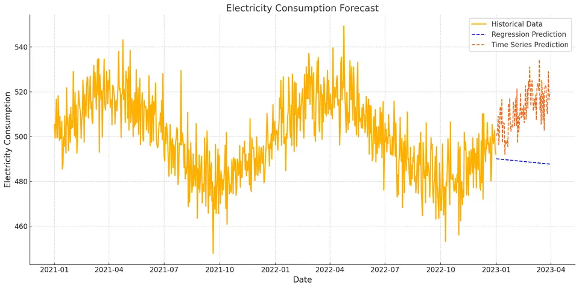
The historical line establishes the observed pattern. The linear projection extends a simple trend, while the exponential-smoothing forecast also reflects seasonal structure. The comparison demonstrates how different structural assumptions lead to different extrapolations beyond the observed sample.
Diagnostic Gallery (Synthetic Examples)
The synthetic examples above form a diagnostic gallery: each plot isolates a feature that changes the modeling decision. Trend suggests a changing mean, seasonality suggests a repeating component, heteroskedasticity suggests changing variance, breaks suggest parameter instability, and positive or negative lag dependence motivates explicit dynamic structure.
Use the gallery to generate specific questions rather than to assign a model by appearance. Does the growing spread remain after a log transformation? Does a level shift align with a change in measurement? Does dependence remain after a known seasonal mean is removed? These questions connect a visible feature to an assumption that can be examined. Real series often combine several features, so a single visual label rarely settles the specification.
Components of a Time Series
A time series can often be described in terms of several broad components:
- Trend: a persistent long-run movement in level or slope.
- Seasonality: a pattern tied to a fixed, known period.
- Cycles: oscillations whose timing is less regular than seasonality.
- Irregular variation: variation not explained by the chosen systematic structure.
- Structural breaks: changes in the mechanism itself rather than ordinary fluctuations around one stable model.
A decomposition is not uniquely determined by the data alone. A slowly varying component may be assigned to trend by one smoother and to a cycle by another. The components must reconstruct the observed series under the chosen additive or multiplicative rule, but their separate interpretations depend on the smoothing and state assumptions. State those assumptions before treating a plotted trend as a directly observed physical quantity.
Time Series Analysis Techniques
Time-series methods are often grouped into time-domain and frequency-domain approaches. The two views are complementary: one describes relationships by lag, while the other describes variation by frequency.
Time-Domain Methods
Time-domain methods keep the observations on their ordered index and study relationships at selected lags. The ACF asks how one series is associated with itself after a shift. Cross-correlation pairs two series after a shift, but a peak can arise from shared trend or seasonality. A dynamic equation adds a direction: it specifies how information available in earlier observations enters a prediction for a later one.
Common time-domain model families include autoregressive and moving-average models, ARIMA, exponential smoothing, dynamic regression, state-space models, and multivariate VAR/VECM models.
A rolling moving average is a descriptive smoother computed from observed values. An MA($q$) stochastic model is different: it represents the current value as a finite combination of unobserved innovations. Keeping these terms separate avoids a common source of confusion.
Exponential smoothing recursively updates latent level, trend, or seasonal states. ARIMA combines differencing with AR and MA dependence. Neither method is universally preferable; each encodes a different representation of evolving structure.
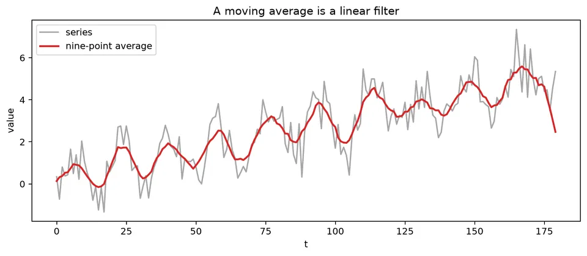
The linear-filter figure connects many time-domain operations. Smoothing, differencing, and ARMA representations can all be expressed as weighted combinations of lagged observations or shocks, with different weight patterns serving different purposes.
Frequency-Domain Methods
Frequency-domain methods decompose variation into oscillations at different frequencies. Fourier and spectral methods are especially useful for detecting dominant cycles and comparing frequency-specific relationships between series.
Wavelet methods add time localization, making them useful when the frequency content changes over the record. Frequency-domain analysis still depends on the sampling rate and stationarity assumptions; aliasing and spectral leakage can distort interpretation.
Parametric vs. Non-Parametric Methods
Parametric methods specify a finite-dimensional model such as ARMA, VAR, or a state-space system and estimate its parameters. Non-parametric or weakly parametric methods estimate features such as autocovariance or spectral density with fewer assumptions about a complete data-generating equation.
A nonparametric method avoids a fixed finite equation for the entire process, but it still chooses how to pool information. A spectral smoother needs a bandwidth; a covariance estimator needs a lag range and assumptions about stability. Those choices control the tradeoff between resolution and noise, much as model order controls flexibility in a parametric model.
Univariate, multivariate, linear, and nonlinear models
Models can also be described by the number of series and the form of their relationships:
- Linear univariate: one target with linear dependence on its own history or innovations.
- Linear multivariate: several series linked through linear dynamic relationships.
- Nonlinear univariate: one target with nonlinear state or lag dependence.
- Nonlinear multivariate: several variables with nonlinear interactions.
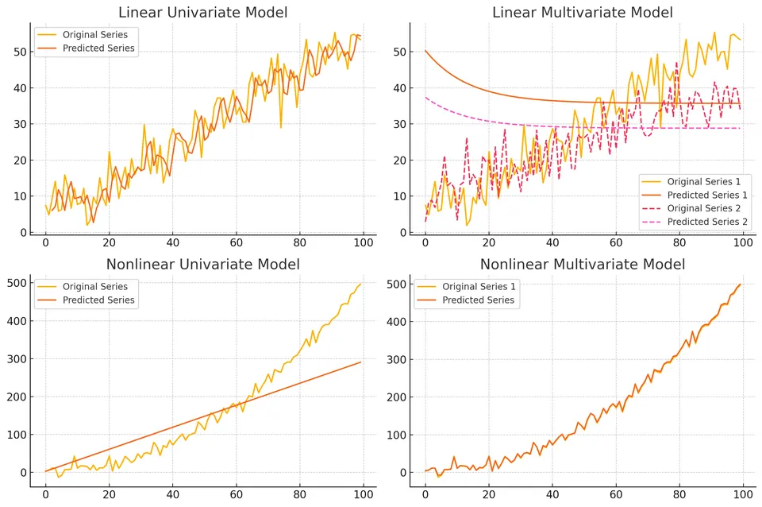
The figure places representative model classes into these four categories. The classification describes structural flexibility, not forecast quality; a simpler linear model can outperform a nonlinear model when the extra flexibility is unsupported by the data.
A Simple Modeling Workflow
- Plot the series and identify trend, seasonality, breaks, missingness, and variance changes.
- Define the target and information set before choosing transformations.
- Model or transform systematic structure such as trend and seasonality when justified.
- Inspect dependence with residual plots, ACF/PACF, or state-space innovations.
- Fit parsimonious candidates that match the remaining structure.
- Forecast and reconstruct the target scale when transformations were used.
- Evaluate chronologically against suitable baselines.
Applications of Time Series Analysis
Time-series analysis is used wherever ordered observations support monitoring or forecasting. Financial applications model returns, volatility, and risk; meteorological applications forecast evolving physical variables; and sales or demand forecasting supports inventory, staffing, and production planning.
The modeling objective and information set differ across these domains, so the same method should not be transferred without checking sampling, loss functions, and forecast horizons.
Example: monthly sales and smoothing
Consider the following twelve monthly sales observations. Each row represents one month, and the order of the rows determines both the time plot and the moving-average calculation:
| Month | Sales |
|---|---|
| 1 | 100 |
| 2 | 120 |
| 3 | 110 |
| 4 | 130 |
| 5 | 140 |
| 6 | 150 |
| 7 | 160 |
| 8 | 180 |
| 9 | 170 |
| 10 | 190 |
| 11 | 200 |
| 12 | 210 |
Plotting the monthly sales
A time plot preserves the month-by-month ordering and makes the upward movement, including the dips at months 3 and 9, visible. The blue line shows every observation in the table above. The orange line shows the trailing three-month mean calculated in the next section; it begins at month 3, when the first complete window is available.
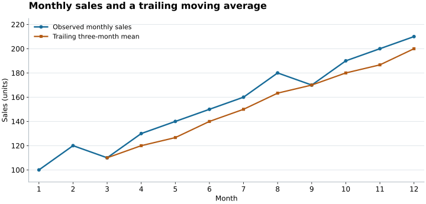
The twelve sales values show an increasing level with temporary dips. They cover only one annual cycle, so they cannot establish that a pattern repeats from year to year. A three-month smoother can describe the local rise, but forecasting requires a separate assumption about whether the level, slope, or seasonal behavior continues. Compare that extrapolation with a simple baseline on later data when such observations become available.
Applying a trailing moving average
For month 3, the trailing average is $(100+120+110)/3=110$. For month 4, it drops month 1 and uses $(120+110+130)/3=120$. The window always ends at the month being summarized. Fractional results are rounded to whole units in the table; the first two rows have no complete window and are left blank rather than being recorded as zeros.
| Month | Sales | Moving Average (Window=3) |
|---|---|---|
| 1 | 100 | |
| 2 | 120 | |
| 3 | 110 | 110 |
| 4 | 130 | 120 |
| 5 | 140 | 127 |
| 6 | 150 | 140 |
| 7 | 160 | 150 |
| 8 | 180 | 163 |
| 9 | 170 | 170 |
| 10 | 190 | 180 |
| 11 | 200 | 187 |
| 12 | 210 | 200 |
The smoother makes the broad upward movement easier to see, while averaging away some month-to-month variation. It is a descriptive calculation rather than a complete probabilistic forecast model: the window does not specify how future observations are generated or how uncertain a forecast should be.
The same data can be fit with simple exponential smoothing (SES):
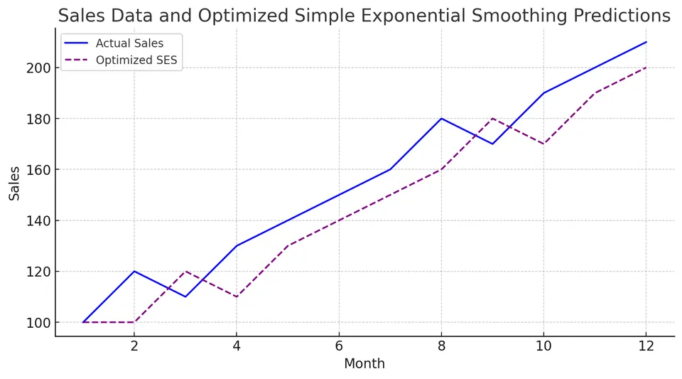
The actual sales line provides the target, while the SES line shows a recursively updated level estimate. Because SES has no explicit trend component, its appropriateness should be judged against trend-aware alternatives if the upward movement persists.
Observation support, decomposition, and forecasting information
A time series is not only a vector $y_1,\ldots,y_T$. Timestamps, sampling rules, support, release timing, and order determine which observations can inform a forecast and which dependence patterns are scientifically plausible.
Learning objectives
After working through this chapter, you should be able to:
- distinguish a time series from an unordered sample;
- identify trend, seasonality, cycles, breaks, and irregular variation;
- write a decomposition and calculate its pieces at a chosen time;
- explain why sampling frequency limits the patterns that can be identified;
- choose an initial transformation without losing sight of the original target;
- define a forecast origin and valid information set;
- distinguish descriptive smoothing from stochastic model terms.
What is indexed by time?
At each time $t$, an observation may be a point measurement, interval total, interval average, event count, or vector of measurements recorded together. These supports are not interchangeable.
Aggregation changes the question as well as the data volume. A daily total combines 24 hourly values, so its variance includes their cross-hour covariances. Within-day peaks can disappear, while weekday effects remain. A good daily-total forecast is not necessarily a good peak-hour forecast. Define the required temporal support before deciding whether aggregation is a useful simplification.
Components with a numerical example
An additive teaching decomposition is
$$ y_t=T_t+S_t+R_t. $$
For
$$ y_t=100+0.5t+10\sin\left(\frac{2\pi t}{12}\right)+\varepsilon_t, $$
at $t=3$,
$$ T_3=100+0.5(3)=101.5, \qquad S_3=10\sin\left(\frac{\pi}{2}\right)=10. $$
The deterministic part is $111.5$. If $\varepsilon_3=-1.2$, the observed value is $110.3$. At $t=6$, $S_6=0$, so the deterministic part is $103$.
The numerical contrast is a check on interpretation: the long-run component can rise while the total falls. Before describing a difference between two dates as growth or decline, compare their seasonal positions and identify which component the statement concerns. The noise term then accounts for the remaining departure, such as the observed value 110.3 instead of the deterministic 111.5 at month 3.
For multiplicative behavior,
$$ y_t=T_tS_tR_t, $$
a log transformation gives
$$ \log y_t=\log T_t+\log S_t+\log R_t, $$
when the values are positive and the multiplicative representation is appropriate.
Trend, seasonality, cycle, and break
- Trend: persistent movement in level or slope.
- Seasonality: a pattern tied to a fixed repeating period.
- Cycle: a longer or less regular oscillation.
- Structural break: a change in the process or parameter regime.
- Irregular component: variation not explained by the chosen structure.
A trend is not necessarily a unit root, a seasonal pattern is not necessarily a seasonal AR term, and a structural break is not automatically an outlier to delete.
Sampling and aliasing
Sampling determines which frequencies can be distinguished. With one observation per interval, the Nyquist frequency is $0.5$ cycles per observation. A higher-frequency signal can appear as a lower-frequency alias when the sampling rate is too low.
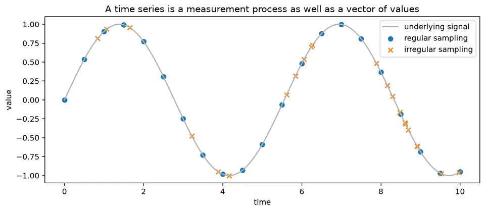
The figure also contrasts regular and irregular timestamps. Standard ACF and Fourier formulas assume a regular grid. Interpolating irregular observations onto such a grid can be useful, but it creates synthetic values and can alter dependence, so it should be treated as a modeling decision.
First-pass exploration
Record the following before modeling:
| question | diagnostic |
|---|---|
| Is the index regular? | timestamp differences |
| Are values missing? | missingness by time and season |
| Does spread grow with level? | level plot and log plot |
| Is there a repeating period? | seasonal subplots and lag-$s$ dependence |
| Is there a break? | rolling moments and event history |
| Are observations dependent? | ACF/PACF and domain mechanism |
| What will be forecast? | target definition and horizon |
The first plot should always be accompanied by a statement of what one observation represents.
Smoothing versus forecasting
A trailing moving average
$$ \tilde y_t=\frac{1}{w}\sum_{j=0}^{w-1}y_{t-j} $$
is a descriptive filter. A centered moving average uses future observations relative to $t$ and is therefore retrospective rather than a valid real-time feature.
Simple exponential smoothing updates a level recursively:
$$ \ell_t=\alpha y_t+(1-\alpha)\ell_{t-1}. $$
To turn a smoothed level into a forecast, specify what persists after the final observation. Simple exponential smoothing assumes that the latest estimated level is the forecast center for every future horizon. Its smoothing parameter controls how quickly the level is updated as observations arrive; it does not by itself quantify future error or establish whether a level-only assumption is appropriate.
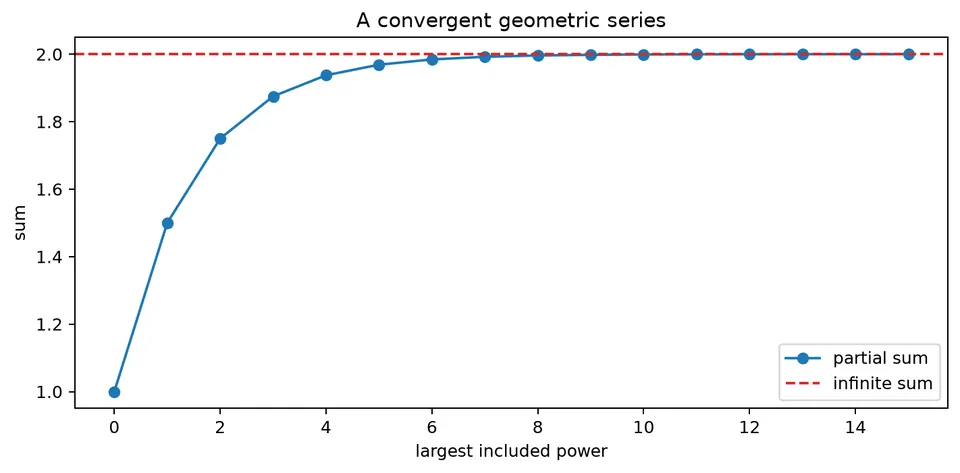
The geometric-series figure explains why exponential weighting has a long but decaying memory: recursively applied weights shrink geometrically as observations become older.
The information set
If a forecast is issued at time $t$, define the available information $\mathcal F_t$. Every transformation, feature, parameter estimate, and model choice used in a historical backtest must be based only on information in that set.
For example, a seasonal index estimated from the complete record can contain observations later than a historical forecast date. Using it in a backtest leaks future information even if the forecasting equation uses only lagged values. Re-estimate preprocessing, predictor values, and model choices within each historical information boundary. Timing is a property of the complete calculation, not merely of the final regression row.
Difference equations and stochastic dynamics
Many time-series models are recursions. Their stability depends on whether the effect of an initial condition or shock decays.
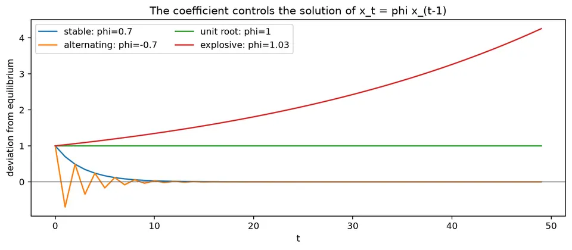
The figure shows stable and unstable recursions. In a stable system, deviations shrink over time; in an unstable system, they grow.
White noise, random walks, and stationarity
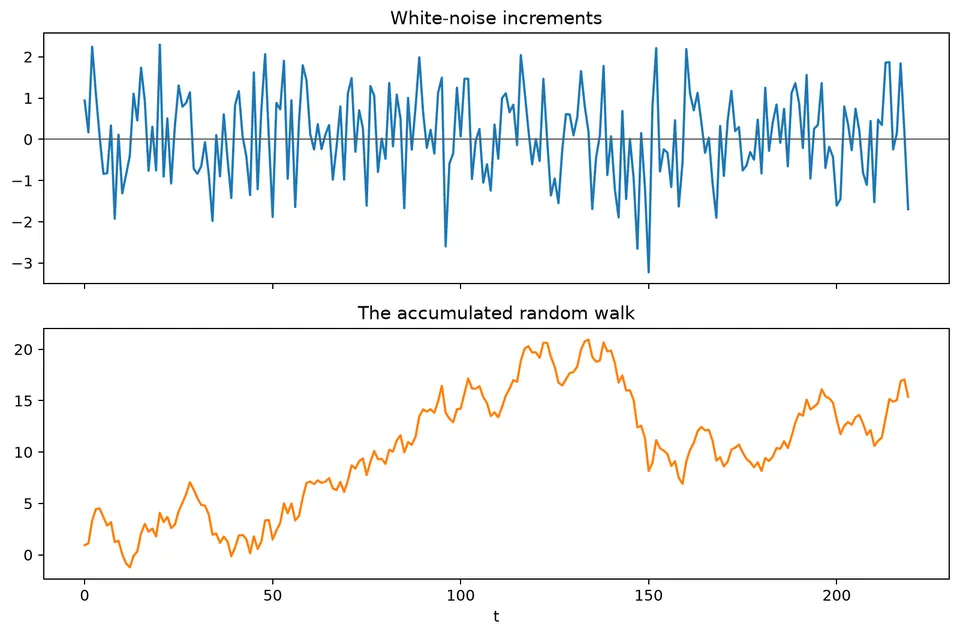
White noise has stable second-order properties, while a random walk accumulates shocks and develops increasing level uncertainty.
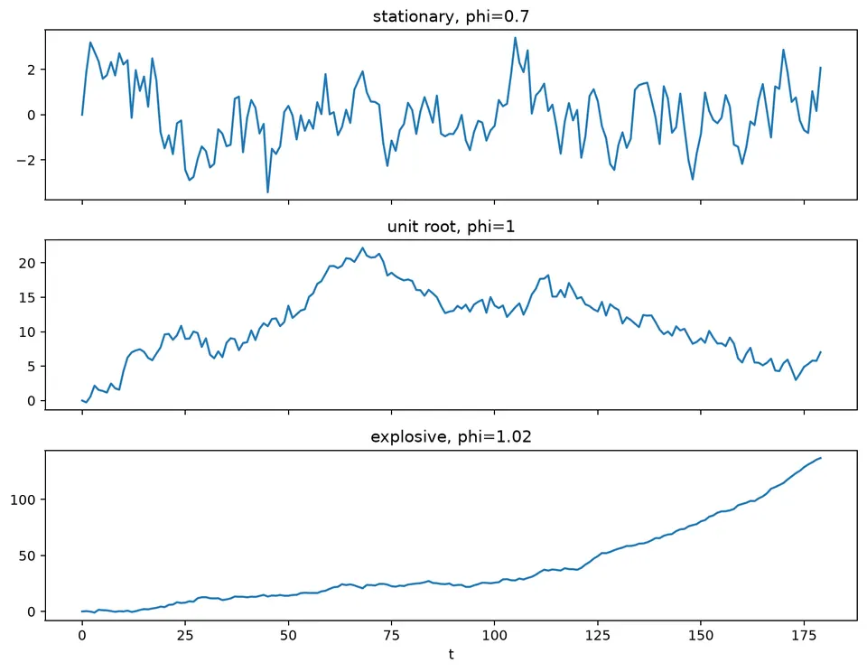
The stationarity figure places stable, unit-root, and explosive behavior side by side. These cases can look similar in short samples, which is why plots, root conditions, transformations, and formal tests should be interpreted together.
Recommended workflow
- State the observational unit and time support.
- Plot levels and relevant transformations.
- Audit timestamp regularity and missingness.
- Describe trend, seasonality, breaks, and changing variance.
- Define the forecast target, horizon, and information set.
- Choose a simple baseline before fitting a complex model.
- Transform only for a stated modeling reason.
- Preserve chronological order in validation.
- Diagnose residuals and forecast errors.
- Explain the limitations of the chosen representation.
Formula reference
| Topic | General formula | Interpretation / special case |
|---|---|---|
| Additive decomposition | $Y_t=T_t+S_t+R_t$ | Trend + seasonal + remainder. |
| Multiplicative decomposition | $Y_t=T_tS_tR_t$ | Useful when seasonal/remainder scale grows with level. |
| Mean function | $\mu_t=E[Y_t]$ | Weak stationarity requires $\mu_t=\mu$. |
| Autocovariance | $\gamma(t,s)=\mathrm{Cov}(Y_t,Y_s)$ | Under weak stationarity, $\gamma(t,s)=\gamma(t-s)$. |
| Autocorrelation | $\rho(h)=\gamma(h)/\gamma(0)$ | Unit-free lag dependence. |
| Backshift | $B^kY_t=Y_{t-k}$ | Compact lag notation. |
| First difference | $\Delta Y_t=(1-B)Y_t=Y_t-Y_{t-1}$ | Models one-period changes. |
| Seasonal difference | $\Delta_sY_t=(1-B^s)Y_t=Y_t-Y_{t-s}$ | Compares the same seasonal position across cycles. |
| Trailing moving average | $\tilde Y_t=w^{-1}\sum_{j=0}^{w-1}Y_{t-j}$ | Descriptive past-only smoother. |
| Simple exponential smoothing | $\ell_t=\alpha Y_t+(1-\alpha)\ell_{t-1}$ | Recursive level update; forecast is commonly $\ell_t$. |
| White noise | $E\varepsilon_t=0$, $\mathrm{Var}(\varepsilon_t)=\sigma^2$, $\gamma_\varepsilon(h)=0$ for $h\ne0$ | Baseline uncorrelated shock process. |
| Random walk | $Y_t=Y_{t-1}+\varepsilon_t$ | Nonstationary level; $\Delta Y_t=\varepsilon_t$. |
| AR($p$) | $Y_t=c+\sum_{i=1}^{p}\phi_iY_{t-i}+\varepsilon_t$ | Dependence on observed lagged values. |
| MA($q$) | $Y_t=\mu+\varepsilon_t+\sum_{j=1}^{q}\theta_j\varepsilon_{t-j}$ | Dependence on current and lagged innovations. |
| ARMA($p,q$) | $\phi(B)(Y_t-\mu)=\theta(B)\varepsilon_t$ | Stationary short-memory linear model. |
| ARIMA($p,d,q$) | $\phi(B)(1-B)^dY_t=c+\theta(B)\varepsilon_t$ | Adds differencing for integrated behavior. |
| SARIMA | $\Phi(B^s)\phi(B)(1-B^s)^D(1-B)^dY_t=\Theta(B^s)\theta(B)\varepsilon_t$ | Adds seasonal AR, MA, and differencing. |
| Forecast | $\hat Y_{t+h\mid t}=E(Y_{t+h}\mid\mathcal F_t)$ | Conditional mean under squared-error loss. |
| Forecast error | $e_{t,h}=Y_{t+h}-\hat Y_{t+h\mid t}$ | Must be evaluated using information available at origin $t$. |
| Nyquist frequency | $f_N=f_s/2$ | Highest uniquely distinguishable frequency under regular sampling. |